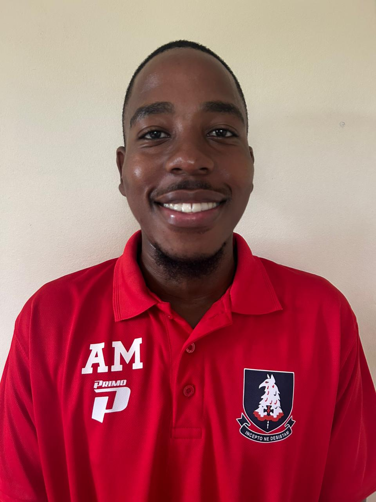

U8 Junior Coach
A passionate U8 football coach specializing in early tactical development. I am dedicated to creating a disciplined yet fun environment where young players can grow with confidence.
Focused on fostering a positive learning atmosphere that balances discipline with enjoyment, ensuring every child feels empowered to reach their full potential on the field.